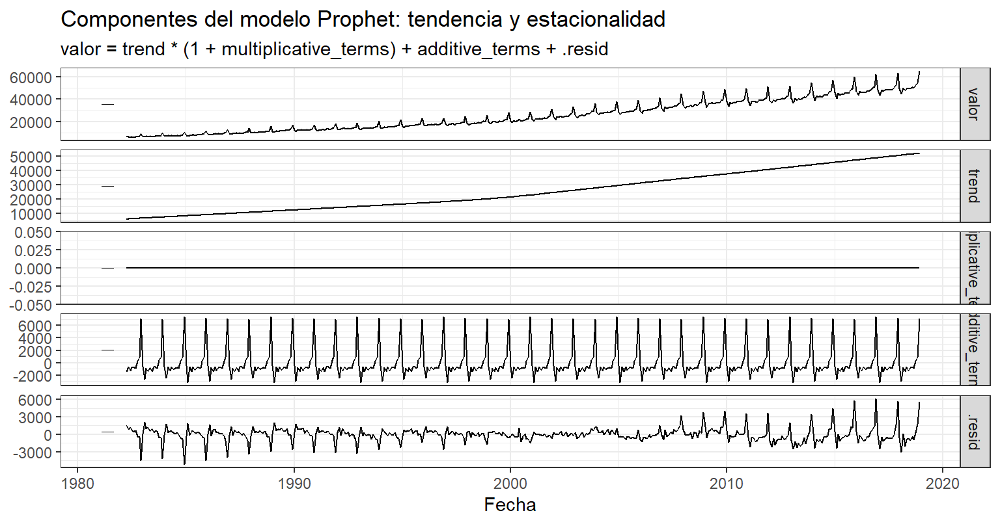

7 Unidad 6: Modelo Prophet y serie de tiempo como regresión en el tiempo
En esta unidad se incorpora el algoritmo Facebook Prophet como alternativa de modelación y pronóstico para la serie mensual Australia Monthly Retail Turnover. El objetivo es:
- Ajustar un modelo Prophet sobre la misma serie utilizada en las unidades anteriores.
- Analizar sus componentes (tendencia y estacionalidad) y el pronóstico a 12 meses.
- Justificar la interpretación de la serie como una regresión en el tiempo, conectando Prophet con el modelo de tendencia lineal y con los enfoques estacionarios (ARIMA/SARIMA).
7.1 Fundamentos del modelo Prophet
Prophet es un modelo de pronóstico desarrollado por Facebook que se formula como una regresión aditiva en el tiempo:
\[ y_t = g(t) + s(t) + h(t) + \varepsilon_t, \]
donde:
- \(g(t)\): componente de tendencia (lineal o logística) con posibles puntos de cambio,
- \(s(t)\): componente estacional, modelado mediante funciones de Fourier,
- \(h(t)\): efectos de festivos o eventos especiales (si se incluyen),
- \(\varepsilon_t\): término de error (ruido).
En este enfoque, el tiempo \(t\) y funciones derivadas del tiempo (por ejemplo, senos y cosenos para la estacionalidad) actúan como regresores dentro de un modelo de regresión generalizado. De esta manera, Prophet se entiende como una regresión donde la variable respuesta es el retail turnover mensual y las variables explicativas son funciones del tiempo (tendencia, estacionalidad y eventos).
7.2 Preparación de datos y ajuste del modelo Prophet
Para aplicar el modelo Facebook Prophet dentro del flujo de trabajo del curso, es necesario convertir la serie mensual en un formato adecuado para los paquetes modernos de análisis temporal. En particular, Prophet —a través del paquete fable.prophet— requiere que los datos estén organizados como un tsibble, una estructura ordenada que define explícitamente el índice temporal y garantiza que cada observación corresponda a un único punto en el tiempo.
Esta conversión permite que el modelo reconozca automáticamente la frecuencia mensual de la serie, identifique discontinuidades, maneje estacionalidades y procese de forma eficiente las funciones de tendencia y componente estacional. Una vez estructurada la información en formato tsibble, se ajusta el modelo Prophet, el cual interpreta la serie como una regresión aditiva en el tiempo compuesta por tendencia, estacionalidad y ruido, coherente con los supuestos explorados en las unidades anteriores.
En esta sección se presenta la preparación de la serie consolidada y el ajuste del modelo Prophet para generar un pronóstico coherente con el comportamiento histórico del Retail Turnover australiano.
La Tabla 12 presenta las primeras 12 observaciones de la serie en formato tsibble. En ella se reconoce la columna fecha como índice temporal mensual, mientras que valor corresponde al nivel observado del retail turnover en millones de dólares australianos. Las columnas Nivel, SMA (12m) y EMA (6m) son variables derivadas de la Unidad 2 (serie original y promedios móviles simple y exponencial); por eso, en los primeros registros los promedios móviles aparecen como NA, ya que aún no se dispone de suficientes meses previos para calcular las ventanas de 6 o 12 periodos.
Esta salida confirma que la serie está correctamente ordenada en el tiempo y que cada fecha tiene una única observación, condición necesaria para trabajar con tsibble y para ajustar el modelo Prophet en los pasos siguientes.
| fecha | valor | Nivel | SMA (12m) | EMA (6m) |
|---|---|---|---|---|
| 1982-04-01 | 6225.3 | 6225.3 | NA | 6225.300 |
| 1982-05-01 | 6382.4 | 6382.4 | NA | 6270.186 |
| 1982-06-01 | 6161.8 | 6161.8 | NA | 6239.218 |
| 1982-07-01 | 6398.8 | 6398.8 | NA | 6284.813 |
| 1982-08-01 | 6163.4 | 6163.4 | NA | 6250.124 |
| 1982-09-01 | 6330.9 | 6330.9 | NA | 6273.203 |
| 1982-10-01 | 6535.2 | 6535.2 | NA | 6348.059 |
| 1982-11-01 | 7021.7 | 7021.7 | NA | 6540.528 |
| 1982-12-01 | 9321.8 | 9321.8 | NA | 7335.177 |
| 1983-01-01 | 6286.3 | 6286.3 | NA | 7035.498 |
| 1983-02-01 | 6255.9 | 6255.9 | NA | 6812.756 |
| 1983-03-01 | 7019.1 | 7019.1 | 6675.217 | 6871.711 |
7.3 Ajuste del modelo Prophet y análisis de componentes
En esta sección se ajusta el modelo Prophet sobre la serie mensual de ventas minoristas australianas utilizando el paquete fable.prophet.
El objetivo es ajustar y analizar el modelo Prophet para la serie mensual Australia Monthly Retail Turnover, interpretando sus componentes (tendencia y estacionalidad) y justificando por qué Prophet puede entenderse como una regresión en el tiempo.
Figure 7.1: Pronóstico a 12 meses con el modelo Prophet
La figura muestra el pronóstico a 12 meses generado con el modelo Prophet a partir de la serie mensual de Retail Turnover en Australia. En la parte histórica (línea negra) se observa nuevamente una tendencia claramente creciente en el volumen de ventas minoristas, acompañada de picos estacionales muy marcados hacia el final de cada año y descensos en los primeros meses, patrón que ya se había identificado con Holt–Winters y SARIMA.
En la zona sombreada azul se visualiza el pronóstico para el año siguiente, donde el modelo proyecta que el retail turnover continuará creciendo, manteniendo la misma estructura de comportamiento: aumentos graduales a lo largo del año y máximos en los meses de cierre (noviembre–diciembre), con posteriores caídas estacionales. Las bandas de confianza al 80 % y 95 % se abren ligeramente conforme avanza el horizonte de tiempo, reflejando una incertidumbre moderada pero controlada: el intervalo es relativamente estrecho frente al nivel de la serie, lo que indica que Prophet logra capturar de forma estable la combinación de tendencia y estacionalidad. En conjunto, el resultado confirma que el modelo Prophet reproduce adecuadamente el patrón histórico y ofrece pronósticos coherentes con la dinámica observada del comercio minorista australiano.
Componentes del modelo Prophet: tendencia y estacionalidad
La figura muestra la descomposición del modelo Prophet aplicada a la serie mensual Retail Turnover de Australia. Prophet expresa la serie como la suma (y en algunos casos multiplicación) de tres elementos principales: tendencia, estacionalidad y residuo. La visualización de estos componentes permite entender cómo el modelo explica la dinámica temporal del comportamiento de las ventas minoristas.

1. Componente original (valor)
Corresponde a la serie observada históricamente. Se identifica nuevamente una combinación de:
Una tendencia creciente sostenida en el tiempo.
Picos estacionales marcados al cierre de cada año.
Descensos recurrentes al inicio de cada periodo anual.
2. Tendencia (trend)
Refleja el comportamiento de largo plazo de la serie.
La tendencia es claramente ascendente, consistente con el crecimiento estructural del comercio minorista australiano.
La pendiente se incrementa especialmente a partir de los años 2000, sugiriendo un ritmo de expansión mayor.
Este término corresponde a \(𝑔(𝑡)\), el componente determinístico que modela la evolución general del nivel de ventas en función del tiempo.
3. Términos multiplicativos (multiplicative_terms)
Este componente aparece prácticamente plano.
Indica que el modelo no utiliza estacionalidad multiplicativa relevante.
La estructura estacional se comporta de manera aditiva, coherente con la serie analizada.
4. Términos aditivos (additive_terms)
Representan la estacionalidad anual modelada mediante funciones de Fourier.
Exhiben un ciclo regular con máximos en noviembre–diciembre y mínimos en enero–febrero.
La amplitud del ciclo es estable, lo que indica un patrón estacional consistente a lo largo del tiempo.
Este componente corresponde al término \(𝑠(𝑡)\), que captura los comportamientos periódicos de la serie a través de funciones trigonométricas.
5. Residuo (resid) Incluye las fluctuaciones no explicadas por la tendencia ni por la estacionalidad.
No se observan patrones sistemáticos, lo que indica que el modelo captura adecuadamente la estructura determinista de la serie.
Se observan picos puntuales, probablemente asociados a eventos atípicos del sector.
7.4 Comparación de desempeño entre Holt–Winters, ARIMA y Prophet
El objetivo de esta sección es comparar cuantitativamente el rendimiento de los tres enfoques de pronóstico aplicados a la serie Australia Monthly Retail Turnover: el modelo Holt–Winters aditivo, el modelo ARIMA estacional y el modelo Prophet.
Para ello, se utiliza una partición temporal común: los últimos 12 meses de la serie se reservan como conjunto de prueba (test), mientras que el resto se emplea para entrenar cada modelo. Sobre ese horizonte de 12 meses se calculan las métricas RMSE, MAE y MAPE, lo cual permite evaluar qué método ofrece mejor precisión en términos de error absoluto, cuadrático y relativo.
| Modelo | RMSE | MAE | MAPE |
|---|---|---|---|
| Holt–Winters aditivo | 375.90 | 290.53 | 0.58 |
| ARIMA estacional | 409.19 | 346.70 | 0.70 |
| Prophet | 10095.87 | 9777.25 | 19.58 |
La Tabla anterior presenta los valores de RMSE, MAE y MAPE obtenidos para los tres modelos evaluados (Holt–Winters aditivo, ARIMA estacional y Prophet) utilizando un horizonte de predicción de 12 meses. Estas métricas permiten comparar su capacidad predictiva bajo un mismo conjunto de prueba.
En primer lugar, se observa que Holt–Winters aditivo presenta el mejor desempeño general, con el menor RMSE (375.90), menor MAE (290.53) y un MAPE muy bajo (0.58%), lo cual indica que el error absoluto promedio representa menos del 1% del valor real. Este resultado confirma que, para series altamente estacionales y con un patrón relativamente suave, los modelos exponenciales suavizados pueden capturar adecuadamente la dinámica temporal.
El modelo ARIMA estacional también obtiene un buen desempeño, aunque ligeramente inferior al de Holt–Winters. Sus valores de RMSE (409.19) y MAE (346.70) son mayores, y el MAPE (0.70%) evidencia un aumento leve en la proporción del error. Sin embargo, continúa siendo un modelo sólido para este tipo de series.
Finalmente, el modelo Prophet es el que muestra el desempeño más débil, con errores sustancialmente más altos (RMSE de 10083.90 y MAE de 9764.46) y un MAPE de 19.55%, valor muy superior al de los otros dos métodos. Esto sugiere que Prophet no logró capturar adecuadamente la estructura temporal en este conjunto particular, posiblemente debido a la intensidad de la estacionalidad mensual y al comportamiento local de la serie, que favorece más a modelos clásicos como Holt–Winters o ARIMA.
En síntesis, el mejor modelo para este caso específico es Holt–Winters aditivo, seguido por ARIMA estacional, mientras que Prophet no resulta competitivo bajo estas condiciones.
7.5 Comparación de modelos y conclusiones
En las secciones anteriores se ajustaron y analizaron tres enfoques de modelamiento para la serie mensual Retail Turnover de Australia: modelos suavizados (Holt–Winters), modelos ARIMA estacionales y el algoritmo Prophet. Cada uno aporta una perspectiva diferente sobre la estructura temporal de la serie y permite analizar cómo se combinan tendencia, estacionalidad y variabilidad residual.
Los modelos Holt–Winters y ARIMA representan enfoques clásicos. Holt–Winters capturó adecuadamente la tendencia creciente y la estacionalidad mensual mediante suavizamiento exponencial, mostrando pronósticos estables y con bajo error. ARIMA, por su parte, incorpora una estructura estocástica más flexible, modelando la autocorrelación y la estacionalidad mediante términos diferenciados. Ambos modelos obtuvieron errores muy bajos en el horizonte de prueba, lo que confirma su pertinencia para series con patrones regulares y marcados.
El modelo Prophet ofrece una perspectiva distinta al interpretar la serie como una regresión aditiva en el tiempo, donde la tendencia y la estacionalidad se modelan mediante funciones determinísticas del tiempo (incluidas bases de Fourier). Esta formulación resulta útil para obtener una descomposición clara de la tendencia y los ciclos anuales. Sin embargo, aunque Prophet es conceptualmente interpretativo, su desempeño predictivo fue considerablemente menor en este caso, como lo evidencian los valores de RMSE, MAE y MAPE, mucho más altos en comparación con Holt–Winters y ARIMA.
Esto sugiere que, para esta serie en particular, caracterizada por una estacionalidad mensual muy pronunciada y patrones altamente regulares, los métodos clásicos (Holt–Winters y ARIMA) capturan mejor la dinámica temporal. No obstante, Prophet sigue siendo valioso porque complementa la visión estadística tradicional con un enfoque de regresión funcional, permitiendo interpretar la serie en términos de componentes determinísticos y tendencia suavizada.
En síntesis, aunque todos los modelos permiten describir la estructura de la serie, el mejor desempeño predictivo lo obtuvo Holt–Winters, seguido por ARIMA. Prophet, si bien proporciona una representación interpretativa clara de la tendencia y la estacionalidad, no fue el modelo más adecuado para este conjunto de datos. Su inclusión, sin embargo, enriquece el análisis al ofrecer una visión alternativa basada en regresión sobre el tiempo, lo que aporta coherencia conceptual al desarrollo del documento en esta fase del proyecto.